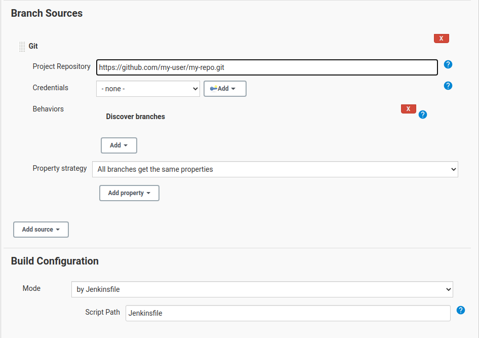
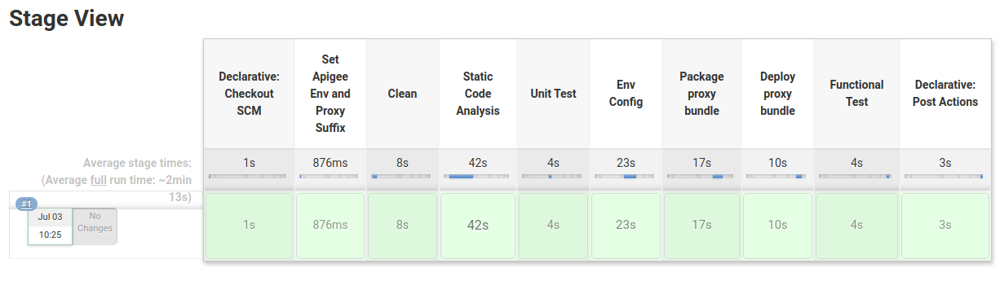

Reference implementation for a CI/CD pipeline for Apigee using Jenkins and the Apigee Deploy Maven Plugin.
The CICD pipeline includes:
The setup described in this reference implementation is based in Jenkins. You
can either use the included instructions to configure a new Jenkins server or
use your existing infrastructure. The jenkins folder contains instructions
on how to set up a dockerized Jenkins environment with all the necessary
tooling and plugins required.
See the instructions in ./jenkins/index.html.
If you already have a current (version 2.200+) Jenkins instance you can also use that one.
You are responsible to ensure you have the following plugins enabled:
The folder airports-cicd-v1 includes a simple API proxy bundle as well as the
following resources:
Start or configure your Jenkins server as described above.
Create a Git repository to hold your API Proxy. To use the airports-cicd-v1
in a Github repository github.com/my-user/my-api-proxy-repo follow these
steps:
cd airports-cicd-v1
git init
git remote add origin git@github.com:my-user/my-api-proxy.git
git checkout -b feature/cicd-pipeline
git add .
git commit -m "initial commit"
git push -u origin feature/cicd-pipeline
Use the UI to configure the Jenkins Job for multibranch pipelines:
https://github.com/my-user/my-api-proxy-repoJenkinsfile
Scan Multibranch Pipeline Now to detect branches with a
Jenkinsfile.
main branch and explore the promotion into
the Apigee test environmentmain branch into the prod branch and explore the promotion
into the Apigee prod environment